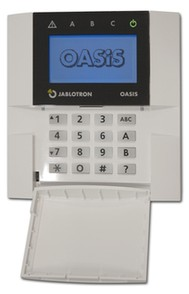

|
       
Kombialarm - TEK 17
Denne sentralen er FG-godkjent, og dekker de fleste behov der du har behov for innbruddsikring og brannvarsling iht TEK-10 JA-82 systemet kan bygges ut omtrent som man vil, og kan utvides til 14 kablede sløyfer. Det er også mulig å kombinere med trådløse enheter. Kommunikasjon kan skje ved GSM, analog telefon eller nettverkskort (LAN). Bruker du branndetektorene 500-IDx, kan du bruke den integrerte sirenen som er i detektoren. Da trenger du ikke annen sirene, men må bruke 2 ledere ekstra. Vi anbefaler da å trekke en 3-par (6 ledere). 
| Elnr |
Type |
Beskrivelse |
| 6260147 |
JA-82K |
Sentral 868Mhz tr.løs/4 kablet |
| 6260123 |
JA-81E |
Kablet tastatur LCD til Oasis |
| 6260148 |
JA-82C |
Eksp.kort 10 soner til JA-82K |
| 6260119 |
JA-82Y |
Utgått -GSM/GPRS-modul til OASIS |
| 6260175 |
NP-2,2A/12 |
Batteri 12V/2,2Ah |
| 6260190 |
500-IDO |
Optisk detektor m/sirene 9-24V |
| 6260189 |
500-IDI |
Ionisk detektor m/sirene, 9-24V |
| 6260191 |
500-IDT |
Termisk detektor m/sirene 9-24V |
| 6260192 |
500-R |
Relesokkel til 500-IDx serien |
| 6260095 |
500-IDOT |
Multikrit Opt/Term, m/sir 9-24V |
| 6249996 |
DM-805 |
Manuell Melder m/reset knapp |
| 1000500 |
4 AF 22 |
Alarm kabel 4x0,22 |
| 6260121 |
JA-80X |
Talemodul, Oasis |
| 6249991 |
JS-20 |
PIR detektor 120ø/12m |
| 6249914 |
MC-11 |
Magnetkont. Dør/Vindu utenpå |
| 6249958 |
MS-LZ |
Magnetkontakt innfelt 8mm |
| 6249952 |
PGM-22 |
Glassknusdetektor for vindu |
| 6249959 |
EMS-AP |
Sjokkdetektor for dører etc. |
| 6260048 |
Banshee |
Innesirene 9-30VDC |
| 6249980 |
FB12-I |
Brannklokke 12 volt - Inne |
| 6249988 |
OS-360/A |
Utesirene 12VDC, Selvdreven |
| 1000501 |
6 AF 50 |
Alarm kabel 2x0,6 + 4x0,22 |
| 1000503 |
10 AF 50 |
Alarm kabel 2x0,5 + 8x0,22 |
| 1000502 |
12 AF 22 |
Alarm kabel 12x0,22 |
|
|
|

 TEK-17 Næring Brannv.
TEK-17 Næring Brannv.